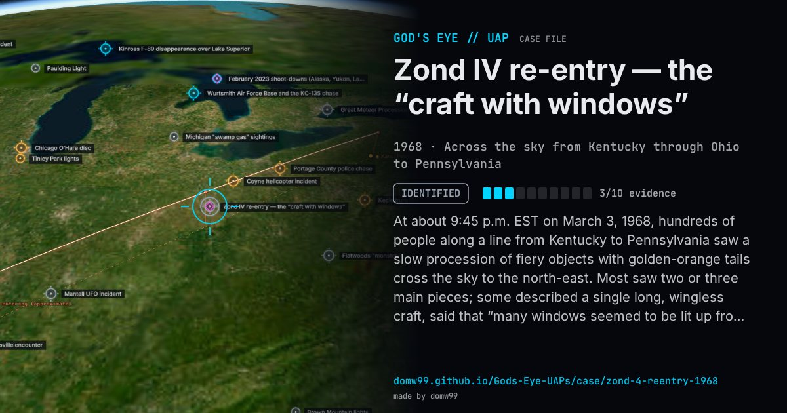

Zond IV re-entry — the “craft with windows”

At about 9:45 p.m. EST on March 3, 1968, hundreds of people along a line from Kentucky to Pennsylvania saw a slow procession of fiery objects with golden-orange tails cross the sky to the north-east. Most saw two or three main pieces; some described a single long, wingless craft, said that “many windows seemed to be lit up from the inside”, or put it at treetop level. NORAD identified the objects as pieces of the Soviet Zond IV probe, launched on March 2, or of its rocket, and Project Blue Book recorded “satellite decay”; a contractor even estimated where surviving pieces might have fallen in north-central Pennsylvania. For the Condon study, William Hartmann compared about 30 detailed reports with the known event: many put the objects within a few miles and below 10,000 ft, when the debris was burning up tens of kilometres high, and the joining of separate lights into one windowed hull became his textbook case of the “airship effect”.
Explanation
NORAD identified the objects as fragments of the Soviet Zond IV probe or its rocket re-entering the atmosphere; Blue Book closed the case as satellite decay. The Condon study used it as its standard example of how honest witnesses turn a re-entry into a structured craft.
What was seen
Shape: Two or three fiery objects with golden-orange tails; some witnesses described a cigar-shaped craft with lit windows
Witnesses: Hundreds of people along a line from Kentucky to Pennsylvania; about 78 written reports
Duration: About two minutes
Sources
- Project Blue Book file, “Northeastern U.S.”, March 1968 (Internet Archive)
- Condon report, Section VI, Chapter 2: Perceptual problems — the re-entry of Zond IV debris
- Wikipedia — Zond 4
Browse
- United States
- 1960s
- Identified
- Tracked object events
- Official government documents
- Many independent witnesses
- Cylinders and cigar shapes